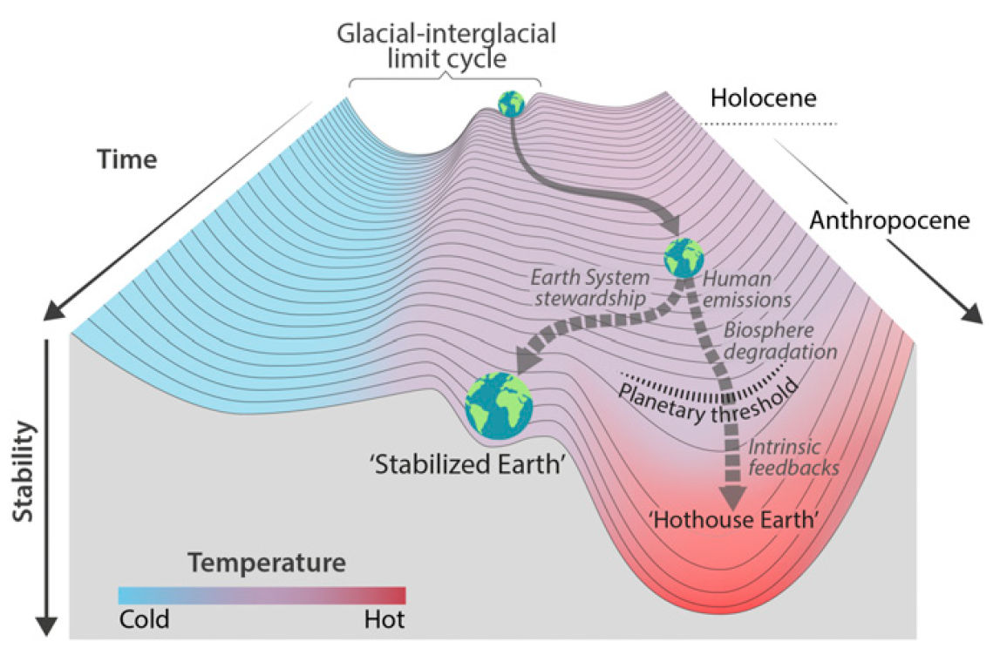
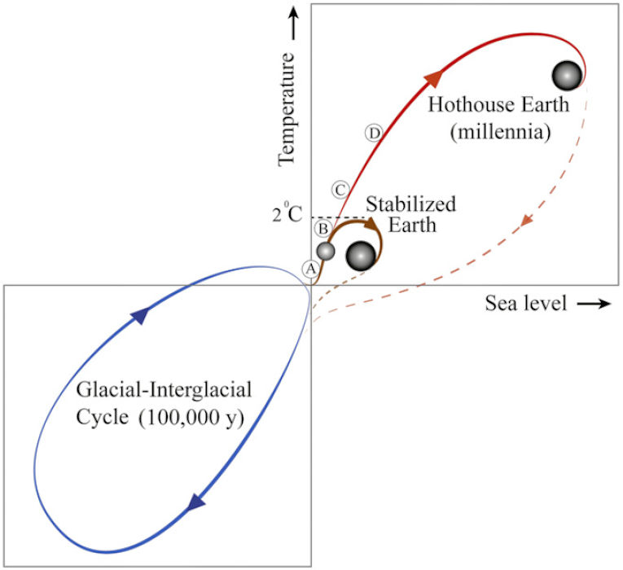
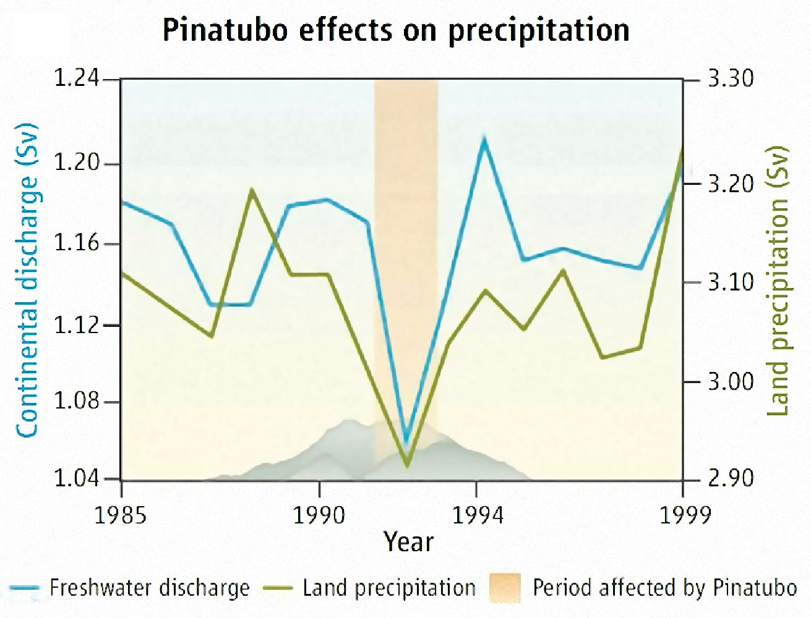
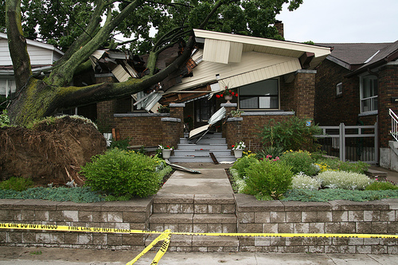
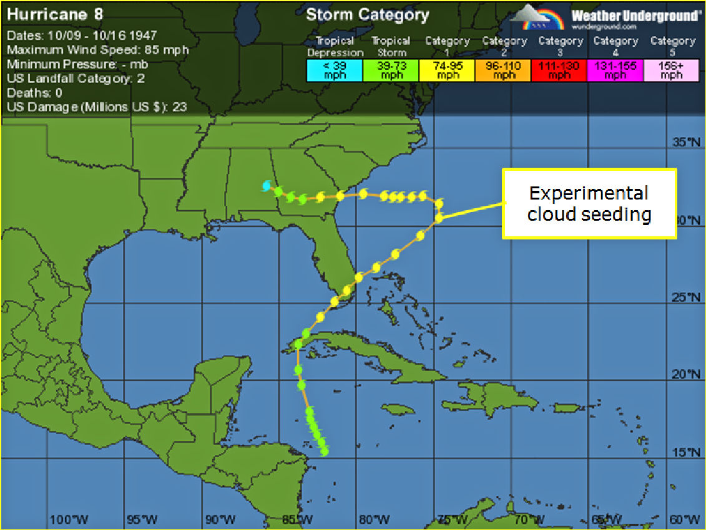
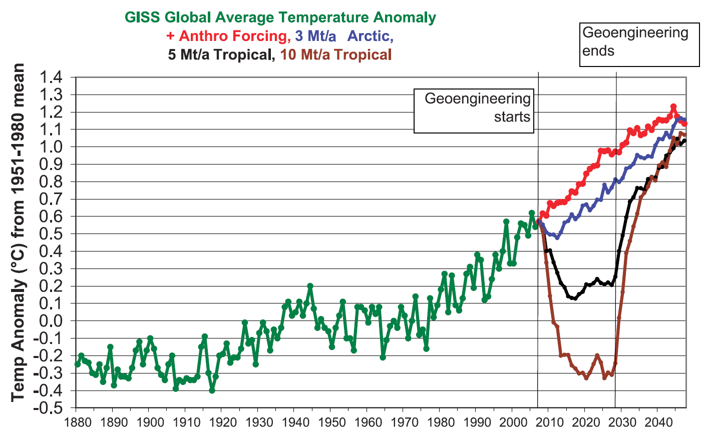

“We have three options:
mitigation, adaptation, and suffering.”
— Prof. Lonnie Thompson

W. Steffen et al., “Trajectories of the Earth System in the Anthropocene,” PNAS 115, 8252 (2018).

W. Steffen et al., “Trajectories of the Earth System in the Anthropocene,” PNAS 115, 8252 (2018).
“Regional diversity in the response to different levels of solar-radiation management could make consensus about the optimal level of geoengineering difficult, if not impossible, to achieve”
K.L. Ricke et al. Nature Geosci. 3, 537 (2010).

G.C. Hegerl & S. Solomon, Science 325, 955 (2009).

37 Calif. L. R. 114 (1949).
Property— Property Rights Incident to Ownership of Land—Cloud Seeding Infringes Property Rights of Subadjacent Landowners — Southwest Weather Research, Inc., v. Rounsville (Tex. Civ. Appl. 1958)
73 Harvard L. R. 790 (1958).
The important question of liability for “cloud seeding” has been decided at the appellate-court level for the first time. The decision, Southwest Weather Research, Inc. v. Duncan, attains added significance in that it delineates the landowner’s rights in the rain clouds above his land and circumscribes the applicable remedy.
1960 Duke L. J. 305 (1960).

In North Carolina, hurricanes did what scientists could not: Convince Republicans that climate change is real
“I always thought climate change was a bunch of nonsense, but now I really do think it is happening,” said [Margie] White, a 65-year-old Trump supporter.
Washington Post, Oct. 18, 2018
Yes, Climate Change Made Harvey and Irma Worse
… the consensus among scientists is that the effects of climate change … made these torms far more destructive.
CNN, Sept. 19, 2017
Are Tornadoes More Powerful Due to Climate Change?
AccuWeather, June 15, 2012
Links between More Extreme Weather and Climate Change
… the key thing, then is that all of the weather that is occurring, all of the storms are occurring in an environment that is simply different than it used to be.
NPR Science Friday, Apr. 5, 2012
Colorado Flooding: Did Climate Change Play A Role in Recent Disaster?
Huffington Post, Sept. 14, 2013
